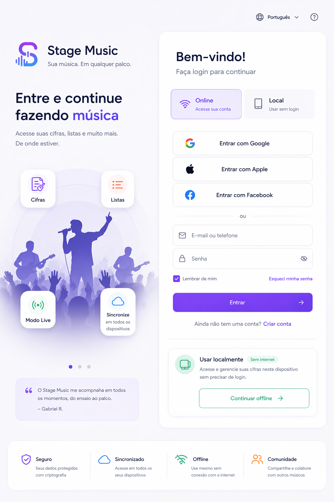

Entrar, criar e sincronizar sem perder a praticidade do modo local
Entre com conta online para sincronização em nuvem gratuita via Firebase ou continue no modo local para editar mesmo sem internet.
Online com Firebase ready
Modo local imediato
Sessão persistente
Entrada no editor

“No celular eu entro rápido, salvo localmente e depois sincronizo quando quiser.”
← Voltar
Fase 11 • conta e sincronização free-first
Escolha como deseja entrar e sincronizar
Conta online preparada para Firebase Auth + Firestore, com fallback local garantido para uso offline.
ou use e-mail e senha
Modo local ativo
Ideal para ensaio, edição rápida e uso offline. O app já libera o editor e salva a sessão como modo local.
Como ativar o Firebase real
Preencha o arquivo js/firebase-config.js com as chaves do seu projeto Firebase. Enquanto isso, esta build já funciona com sessão local e sessão demo online.